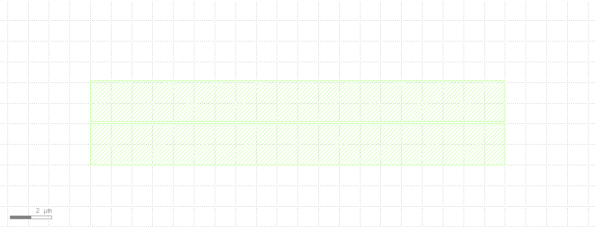
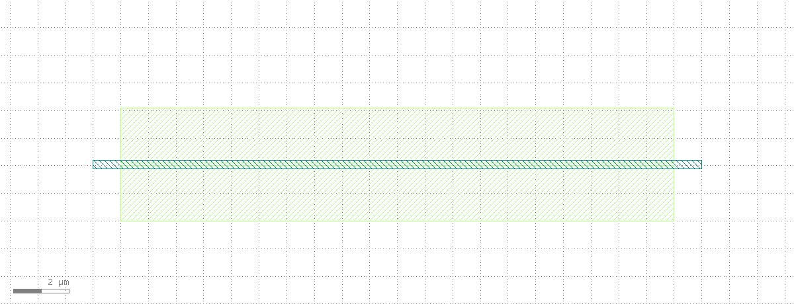
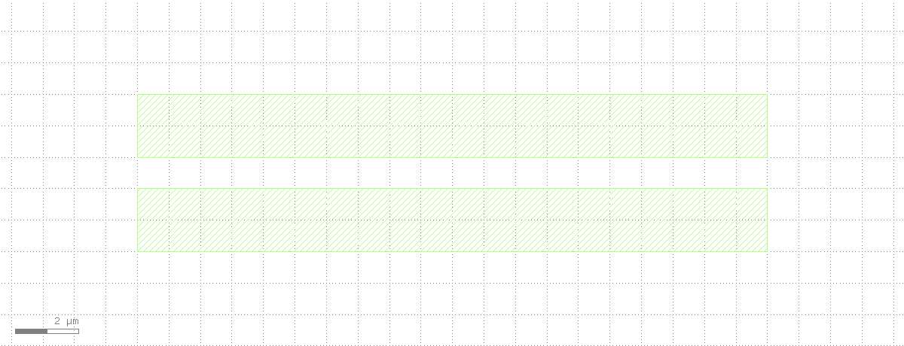

Chat Case Study: Catching and Fixing a DRC Violation with klink
Three requests, three real tool calls: draw a layout with a planted spacing problem, run DRC through klink to catch it, then fix it and confirm clean.
Opening a disposable tab and drawing two 20um-long metal lines on layer 20/0: one at y=[0,2], the other at y=[2.1,4.1] -- exactly a 0.1um gap.

Writing a minimal DRC deck that runs a space(0.5.um) check on layer 20/0, executed through drc.run on KLayout's native DRC engine:
Caught it -- real result: 1 spacing violation (category M_SPACE). To make the violation location visible in the screenshot too, I drew a highlight box on marker layer 66/0 over that 0.1um gap (the blue hatched region -- coordinates taken from the actual gap we drew, not fabricated):

Deleting the violation marker and the old top trace, then redrawing it at y=[3.0,5.0] -- that makes the gap 3.0−2.0 = 1.0um. Rerunning the same deck:
Confirmed clean: 0 violations. A 1um gap satisfies the 0.5um minimum-space rule.

Full DRC/LVS capability → Features · DRC · LVS.
drc.run/shape.* calls and their reported violation counts (1 → 0) were all executed for real against a live KLayout (dedicated session, port 8766), and the screenshots are the actual render output of that run. The disposable tab used for this work was closed at the end, and the original tab was restored as the active view.